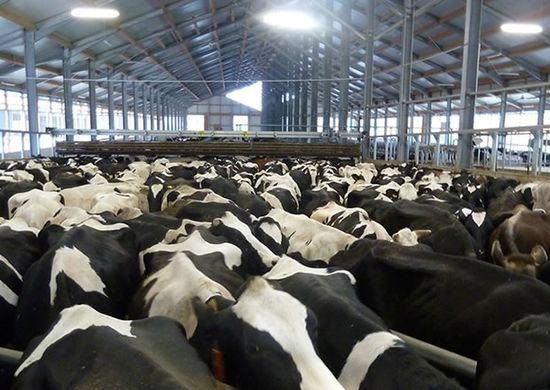
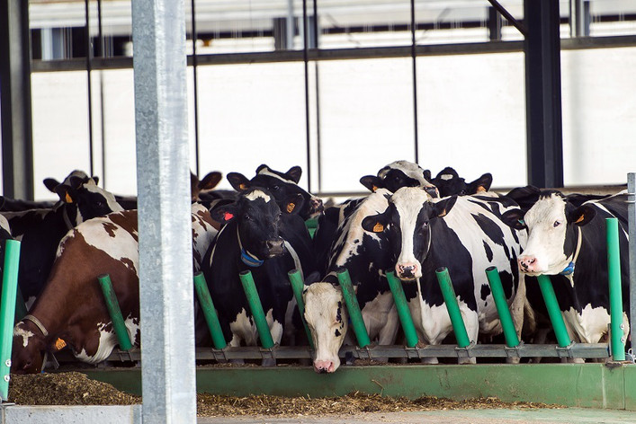
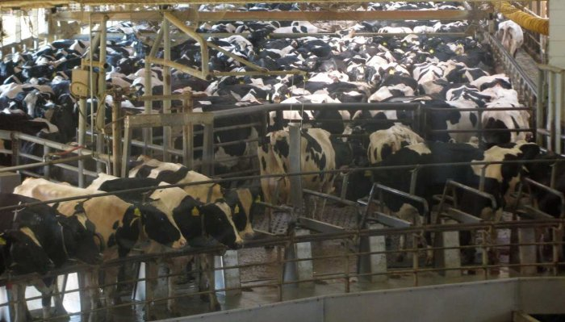
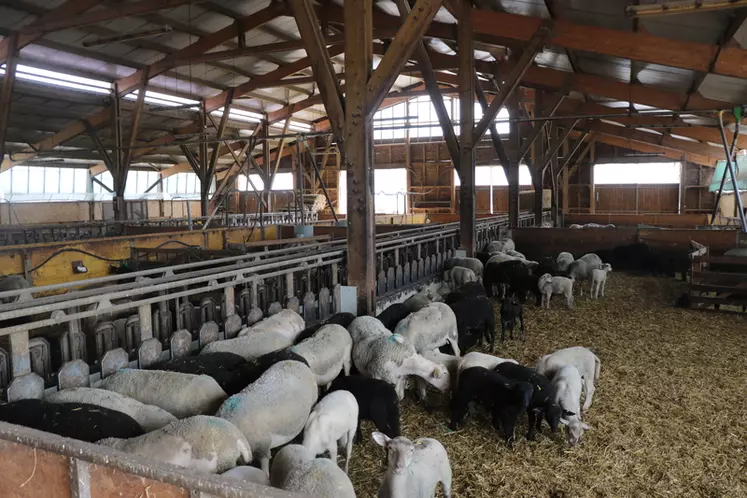

République Tunisienne Ministère de l’Agricultutre, des Ressources Hydrauliques et de la Pêche
Secteur de l'élevage
L’élevage en Tunisie occupe une place importante dans l’économie tunisienne du fait qu’il contribue à raison de :
35-40 % du PIB agricole.
4-5 % du PIB global.
Les systèmes d’élevage et types d'exploitation
Les systèmes d’élevage
Élevage intensif intégré et organisé
Ce système est caractérisé par :
Une alimentation basée sur le fourrage vert et l’ensilage.
Un taux d’intégration de l’élevage à l’agriculture est élevé.
Et il :
Concerne l’élevage laitier.
Regroupe les grandes exploitations du nord.
regroupe 20% des éleveurs laitiers.

Élevage semi-intensif ou non intégré
La particularité de ce système c’est qu’il est :
Pratiqué pour l’engraissement des taurillons.
Développé dans le nord ouest.

Élevage "hors sol"
Ce système est pratiqué en dehors des surfaces agricoles, et il est :
Développé dans le centre du pays.
Concerne 50% des élevages laitiers.
Présente 22% de tout l’élevage bovin.

Élevage traditionnel ou extensif
Dans ce type d’élevage, l’alimentation basée sur les parcours, moyennant une complémentation durant la période difficile.

Types d’exploitation
Les différents types d’exploitation rencontrés dans l’agriculture tunisienne sont classés comme suit :
85 % des exploitants agricoles possèdent des superficies < 20 Ha.
46 % des exploitants agricoles possèdent des superficies < 5 Ha.
Les exploitations < 20 Ha couvrent moins des 40 % des surfaces cultivées dans le pays mais assurent 60 % de l’élevage car elles abritent 2/3 des bovins et plus de 50 % des petits ruminants.